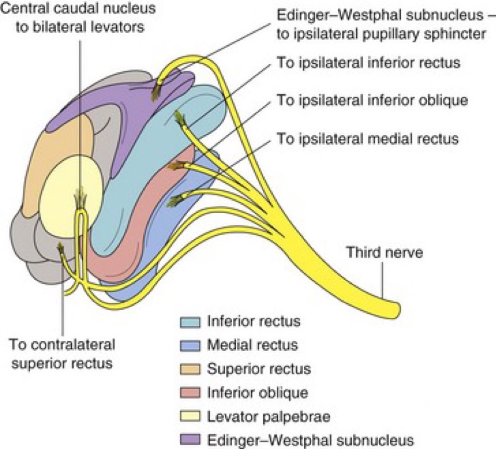

眼瞼
Friday, March 14, 2025
4:07 PM
一、眼瞼解剖
- 可以由外而內分為七層
- 皮膚：CN V I上眼皮、CN V II下眼皮感覺
- 閉眼肌肉：CN VII負責眼輪匝肌，閉眼
- 眶隔(Orbital septum)：orbital infection的界線
- 眼眶脂肪(Orbital fat)：若受傷看到脂肪不能直接縫合
- 睜眼肌肉：Aponeurosis of levator m.(CN III)、Muller's m.(交感) -> 與Horner等ptosis相關
- 眼瞼板(Tarsus)：lid margin、meibomian gland(油脂腺)、gray line(眼輪匝肌邊緣) -> 眼瞼撕裂修復的land mark
- 結膜(Conjunctiva)

二、眼瞼功能：保護眼球，形成淚液層保水，幫助眼淚排除淚液
三、遺傳性疾病
- Blepharophimosis眼瞼狹窄：Telecanthus眼距過寬、Epicanthus inversus跟嚴重眼瞼下垂
- Epicanthus 內側贅皮：會看起來有假性內斜視，透過反光點可以排除
- Epiblepharon眼瞼贅皮：眼瞼位置正常，但外側皮肉增生導致睫毛內轉，觸碰角膜引起角膜炎
四、後天性疾病
- Chalazion霰粒腫, 非感染：Meibomian gland出口阻塞造成的慢性、無菌肉芽腫發炎
- 抗生素無效！！
- 以熱敷、引流、手術切除
- Hordeolum麥粒腫=針眼, 感染性：油脂腺的急性感染
- Gland of Zeis -> external hordeolum
- Meibomian gland -> internal hordeolum
- 治療：熱敷、局部或系統性抗生素
- Herpes Zoster Ophthalmicus帶狀皰疹病毒眼症
- 特徵：VZV引起的CN V-1感染，跟一般但狀皰疹有一樣的不跨中線的皮膚病灶，角膜感染有Psudodendritic corneal ulcer(見角膜)
- Htuchinson sign！！
- 角膜跟鼻尖同時為CN V-1的鼻睫神經（Nasociliary nerve）支配，分屬外鼻神經（External nasal nerve） → 負責支配鼻尖及鼻翼內側的皮膚；長睫神經（Long ciliary nerves） → 負責支配角膜感覺
- 治療：根據急慢性，以acyclovir治療
# 補充 Hutchinson sign在不同科別有三個
- Nail -> Subungual melanoma
- Teeth -> congenital symphilis
- Nose tip -> VZV infection
五、眼瞼邊緣異常：
- 眼瞼外翻, Ectropion：
- 退化性(Involutional)：下眼瞼為主
- 麻痺性(Paralytic)：CN7麻痺
- 機械性(Mechanical)：腫瘤在邊緣導致
- 結痂(Cicatricial)：疤痕導致
- 眼瞼內翻, Entropion：下眼瞼常見
- Congenital entropion
- Spastic entropion：常見於輕微眼瞼退化病人，因為不舒服一直眨眼，導致環狀肌肥大把眼瞼內推 -> 可以肉毒注射治療
- Involutional entropion：和年紀增長有關，最常見
- Cicatricial entropion：砂眼、外傷等造成
- 睫毛倒插Trichiasis
六、眼瞼下垂：
- 正常眼瞼：上眼瞼會蓋住角膜交界(1-2mm)，下眼接切齊角膜交界
- 可根據下垂的多寡區分嚴重度：mild(-2mm), Moderate(2-4mm), Severe (>4mm)
- 評估：
- Margin-Reflex Distance：手電筒照的角膜反光點和眼皮的距離
- Levator muscle function：讓病人向下看，再用手壓住額肌避免代償，正常人8-12 mm, 4-8 mm尚可, < 4mm 為不良
- 看上眼瞼皺褶
- 垂直瞼裂高度：就是上述看上眼瞼跟limbus的距離
- 病因：
- 神經性Neurogenic
- 動眼神經麻痺：會有眼瞼下垂、眼前往外下方移動、合併diplopia等。不一定會有瞳孔擴張。因為瞳孔縮小的調控起源是Edinger-Westphal nucleus，較周邊且血流供應充足，因此若有合併瞳孔擴張表示要危險可能有外科問題。

- Isolated CN 3 palsy
- 25%病因不明
- 血管問題 -> 三高相關
- Trauma -> subdura clot
- P-com or PCA aneurysm
- Horner syndrome
- 交感神經受損：ptosis, miosis, anhydrosis
- Marcus-Gunn jaw winking ptosis
- CN5異常支配提上眼瞼肌所造成 -> 因此給病人吃糖果可以改善
- 肌原性Myogenic ->透過Brow suspension以額肌力量去拉起眼皮
- Congenital：提上眼瞼肌發育不良
- Acquired：
- 重症肌無力MG：有15%病人只有眼睛的症狀稱為OMG，定義為levator palpebrae, superioris, orbivularis oculi等眼動肌的麻痺，OMG相較系統性的比較沒有Acetylcholine receptor的抗體，因此診斷為一大困難，可以用ice packing test做鑑別但常常做不出來
- 肌肉失養症
- 腱膜性Aponeurotic
- Congential：罕見
- Acquired：所有種類最常見，年紀老化、隱眼戴太多等，雙眼皮會感覺被拉很開因為腱模鬆掉
- 機械性Mechanical ：一樣腫瘤相關
- 手術：根據Levator muscle function決定
- Muller's muscle conjunctival resection：縮短muller's muscle
- Frontalis muscle suspension=Brow suspension：在muller's muscle功能不彰的時候，用提眉毛的肌肉把眼皮拉起來，可以提升最多Margin-reflex distance
# 補充：可以用交感刺激的眼藥水去測試muller's muscle的功能，區別視神經支配問題還是肌肉本身受損
七、眼瞼後縮
- 定義：後縮造成過多眼白露出，可能有閉合不全、暴露型角膜炎的狀況
- 甲狀腺眼炎(thyroid ophthalmopathy)
- Graves' disease是成人凸眼最常見的成因，且為上下眼皮後退的最常見原因
- 與TSH、甲狀腺功能並沒有直接的正相關
- 機轉：TSH引起免疫變化，fibroblast增生導致眼外肌發炎增大，導致眼窩壓力增大、凸眼、眼皮後縮
- 特徵：最常影響下直肌>內直肌。CT中肌肉tendon不似肌肉belly增厚(tendon spare)。lateral flare眼球外側後退比內側嚴重，提上瞼肌（levator palpebrae superioris, LPS） 和 Müller’s muscle 的不均勻收縮所致
- 治療：戒菸、治療underlyign、保濕、可以給予類固醇
- 手術：以眼窩減壓>眼肌手術>眼瞼手術(閉不緊)
八、眼皮肌張力失調
- 原發性眼瞼痙攣(essential blepharospasm)
- 中年女性好發
- 病因可能為基底核放電異常：眼周肌肉不正常收縮造成眨眼
- 可以打肉毒
- 半面顏面神經痙攣(Hemifacial spasm)
- 間歇姓痙攣
- 睡覺也會造成 (反之essential 則不會)
- 病因和facial nerve的血管在腦幹附近受到壓迫
- 可以神經減壓打肉毒
- 麻痺性眼瞼閉合不全
九、眼瞼腫瘤(Eyelid tumor)
- 良性
- 最常見為病毒疣
- 容易變成前期惡性的為陽光角化症(actinic keratosis)
- 惡性
- 基底細胞癌(Basal cell carcinoma)
- 最常見的惡性腫瘤，約占90-95%
- 分部內下側眼瞼，會有maradosis(破壞附近的睫毛)
- 有小的血管擴張或是中央火山口潰瘍
- 治療：Moh's micrographic surgery
- 鱗狀細胞癌(Squamous cell carcinoma)
- 少見但侵略性高，可能發展自癌前病變的光照傷口或是角化班
- 好發於下眼瞼，透過淋巴血行傳播
- 治療：wide excision、Moh's surgery
- 皮脂腺癌(Sebaceous cell carcinoma)
- 最常源自Meibomian gland
- 好發於上眼瞼，東方中年女性好發
- 偉大的模仿者(之一呵呵)，也會有睫毛脫落，惡性程度高義全身轉移
- 治療：wide excision